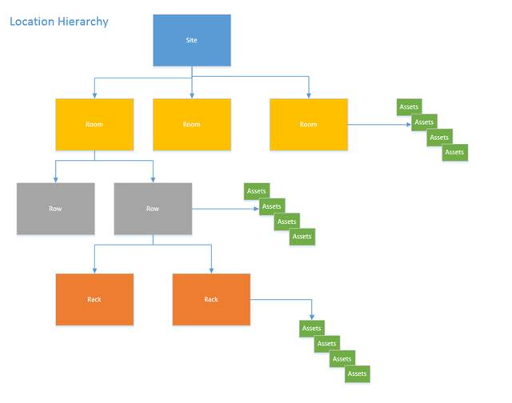

The Site screen will enable users to maintain Sites. One can create multiple sites and locations for a company in the system. Given below is the hierarchical relationship between Site, Room, Row and locations. It is important to understand the concept in relation to the Asset Movement.

Figure 17: Location Hierarchy
Please note:
1. Room, Row and Rack are considered as a Location in the system and they can be created by Maintain Location Option.
2. For a Rack, the parent location is a Row and for a Row the parent location is a Room. There can only be one parent but one parent can have multiple children.
3. Assets can be placed in a rack (Rack Mounted Assets). Assets can also be placed in a Row or in a Room (Floor Standing Assets).
Can I create a Site of the same name?
No. Site name should be unique. While adding a new site, System will display an error message if the site with the same name already exists.
|
Copyright © 2019 Hewlett
Packard Enterprise,v5.2.
|